Screenshot — Enhance Dormant
| Versi | 2.0 |
| Tanggal | 7 April 2026 |
| Status | Draft |
Version Log
| Versi | Tanggal | Keterangan |
|---|---|---|
| 1.0 | 1 April 2026 | Draft awal — parameter global, parameter produk, informasi rekening, batch proses dormant |
| 2.0 | 7 April 2026 | Penambahan field parameter transaksi umum (Kategori Aktivitas Nasabah, Transaksi Sistem, Izinkan Rekening Tidak Aktif, Izinkan Rekening Dormant) |
1. Konfigurasi Parameter
1.1 Parameter Global
- Menu : Parameter → Parameter Global (filter grup:
REKENING_DORMANT)
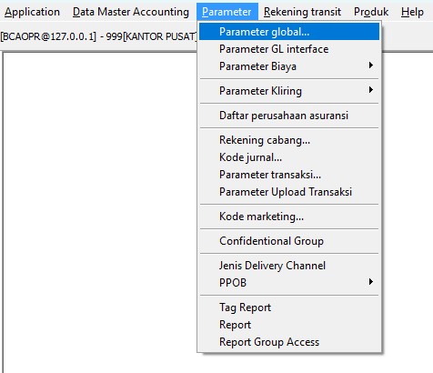
- List : Daftar parameter
REKENING_DORMANT(tampilkan: TAKT_HARI, DORM_HARI, TUTUP_NOL_HARI, TAKT_BIAYA, DORM_BIAYA)
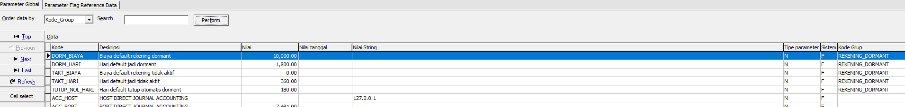
- Form : Form edit salah satu parameter (contoh: TAKT_HARI = 360)
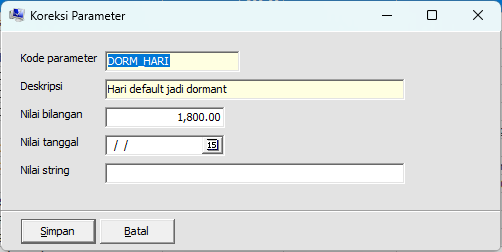
1.2 Parameter Transaksi
- Menu: Parameter → Parameter Transaksi
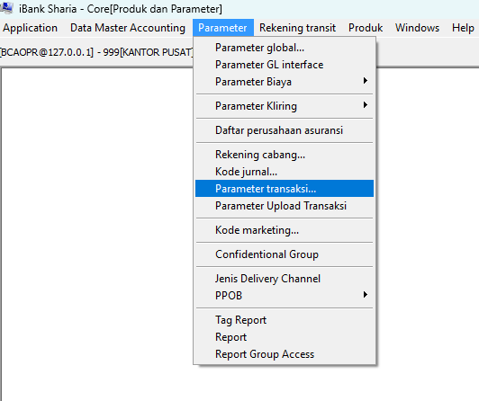
- List : Daftar parameter transaksi dengan kolom
is_exclude_aktivitas_nasabah
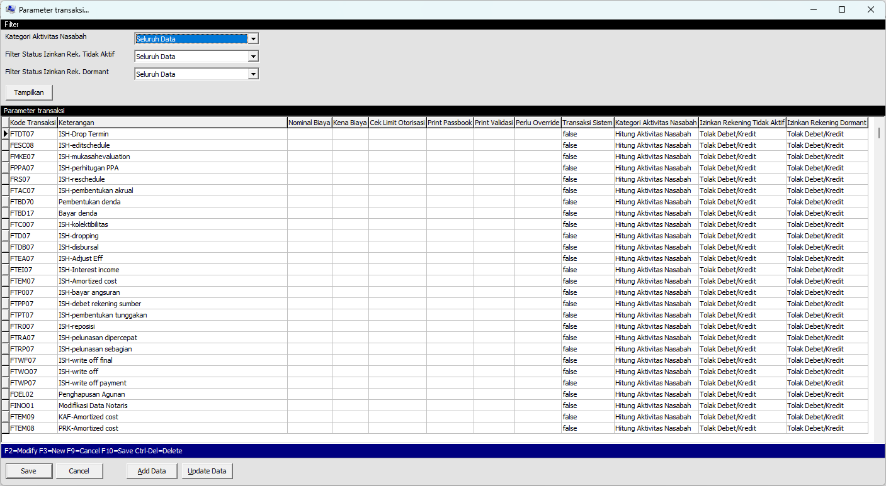
- Form : Form Detail Parameter Transaksi
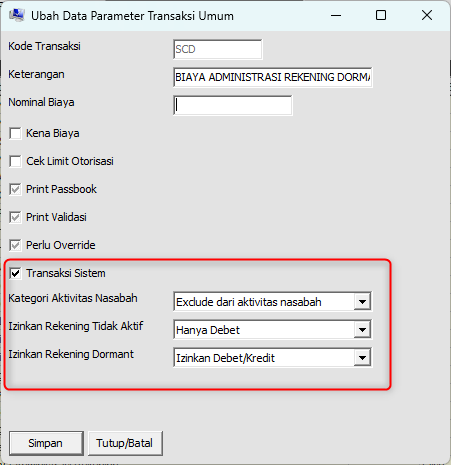
Ringkasan field parameter transaksi yang ditambahkan (kotak merah):
| Caption di Form | Field | Nilai | Fungsi |
|---|---|---|---|
| Transaksi Sistem | is_transaksi_sistem |
T / F (default F) |
Menandai transaksi yang berasal dari sistem (misal posting bagi hasil), sehingga bisa diabaikan untuk logika tertentu seperti auto-dormant |
| Kategori Aktivitas Nasabah | tipe_exclude_aktivitas_nasabah |
F / DC / D / C (default F) |
F = hitung sebagai aktivitas nasabah, DC = exclude dari aktivitas nasabah, D = exclude debit, C = exclude kredit |
| Izinkan Rekening Tidak Aktif | allow_rekening_tidak_aktif |
F / DC / D / C (default F) |
F = Tolak Debet/Kredit, DC = Izinkan Debet/Kredit, D = Hanya Debet, C = Hanya Kredit |
| Izinkan Rekening Dormant | allow_rekening_dormant |
F / DC / D / C (default F) |
F = Tolak Debet/Kredit, DC = Izinkan Debet/Kredit, D = Hanya Debet, C = Hanya Kredit |
Catatan: Jika kode transaksi tidak terdapat di parameter ini, maka secara default dianggap sebagai aktivitas nasabah (
tipe_exclude_aktivitas_nasabah = 'F'), bukan transaksi sistem, dan tidak boleh untuk rekening tidak aktif maupun dormant. Contoh kode yang di-exclude: SD, PD, SC, SCD, SDP, SDZ, SI.
1.3 Parameter Produk
- Menu: Parameter → List Produk Tabungan (atau Giro)
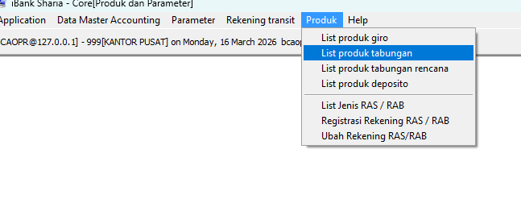
- Form : Ubah Produk — Penyesuaian Field Parameter Tidak Aktif, Dormant dan Tutup Otomatis Saldo Nol
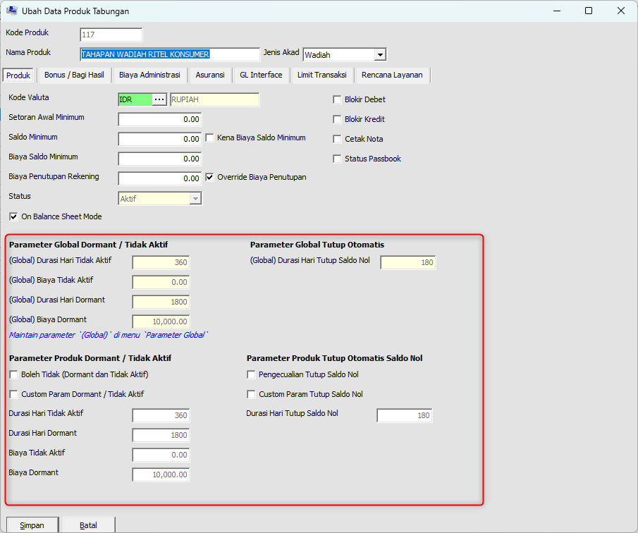
Ringkasan field produk yang terlibat:
Parameter Global Dormant / Tidak Aktif (read-only, referensi):
| Caption di Form | Fungsi |
|---|---|
| (Global) Durasi Hari Tidak Aktif | Nilai global threshold hari tidak aktif (read-only) |
| (Global) Biaya Tidak Aktif | Nilai global biaya tidak aktif (read-only) |
| (Global) Durasi Hari Dormant | Nilai global threshold hari dormant (read-only) |
| (Global) Biaya Dormant | Nilai global biaya dormant (read-only) |
Parameter Global Tutup Otomatis (read-only, referensi):
| Caption di Form | Fungsi |
|---|---|
| (Global) Durasi Hari Tutup Saldo Nol | Nilai global threshold hari tutup otomatis (read-only) |
Parameter Produk Dormant / Tidak Aktif:
| Caption di Form | Fungsi |
|---|---|
| Boleh Tidak (Dormant dan Tidak Aktif) | ☑ = rekening produk ini boleh berstatus Tidak Aktif maupun Dormant |
| Custom Param Dormant / Tidak Aktif | ☑ = gunakan threshold & biaya dari produk, bukan global |
| Durasi Hari Tidak Aktif | Override threshold hari tidak aktif (aktif jika Custom Param dicentang) |
| Durasi Hari Dormant | Override threshold hari dormant (aktif jika Custom Param dicentang) |
| Biaya Tidak Aktif | Override nominal biaya tidak aktif (aktif jika Custom Param dicentang) |
| Biaya Dormant | Override nominal biaya dormant (aktif jika Custom Param dicentang) |
Parameter Produk Tutup Otomatis Saldo Nol:
| Caption di Form | Fungsi |
|---|---|
| Pengecualian Tutup Saldo Nol | ☑ = rekening produk ini tidak akan ditutup otomatis saat saldo nol |
| Custom Param Tutup Saldo Nol | ☑ = gunakan threshold tutup otomatis dari produk, bukan global |
| Durasi Hari Tutup Saldo Nol | Override threshold hari tutup otomatis (aktif jika Custom Param dicentang) |
2. Informasi Rekening Nasabah
- Informasi Rekening → Info Tgl Aktivitas Terakhir
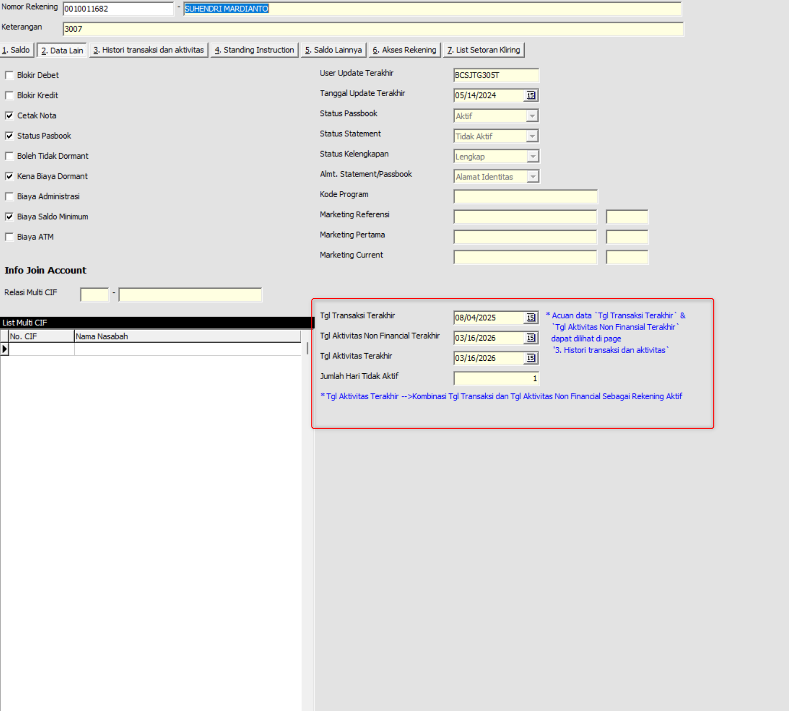
Mekanisme tgl_aktivitas_terakhir
- Merupakan gabungan dari transaksi finansial nasabah (kecuali transaksi otomatis sistem) dan aktivitas non-finansial nasabah.
- Hanya diperbarui jika rekening berstatus Aktif. Jika rekening sudah berstatus Tidak Aktif atau Dormant, tanggal ini berhenti diperbarui agar hitungan batas hari tidak ter-reset secara otomatis (memerlukan reaktivasi manual dari petugas).
- Tanggal ini adalah acuan utama perhitungan threshold perpindahan status rekening pada proses End of Day (EOD).
- Update Realtime Saat Inquiry: Khusus ketika nomor rekening di-inquiry (misalnya dibuka di layar Informasi Rekening), sistem akan langsung melakukan operasi kalkulasi dan update data tanpa menunggu jadwal EOD, memastikan data yang tampil selalu sinkron dengan aktivitas dan transaksi hari ini.
-
Informasi Rekening → Info Histori Tgl Aktivitas Nonfin Terakhir
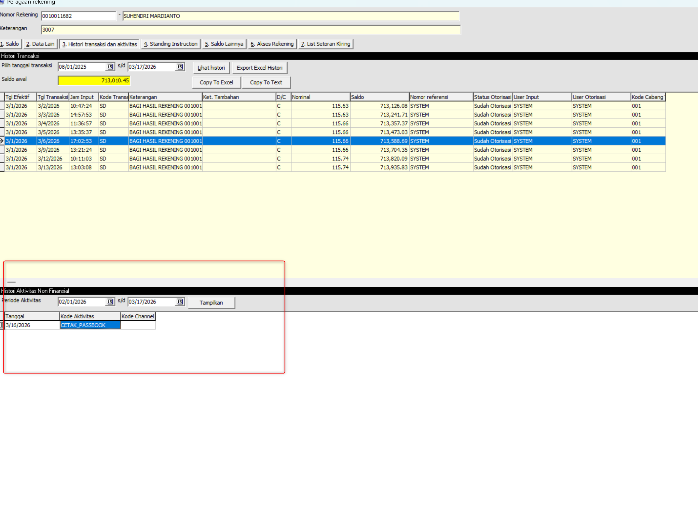
-
Informasi Rekening - Info Saldo Nol
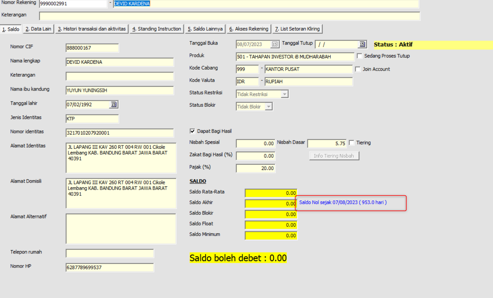
3. Transaksi Berdasarkan Status Rekening
Menunjukkan perbedaan perilaku sistem saat transaksi dilakukan pada rekening dengan status berbeda.
3.1 Transaksi pada Rekening Tidak Aktif
- Transaksi debet tidak diperbolehkan (contoh: pindah buku)
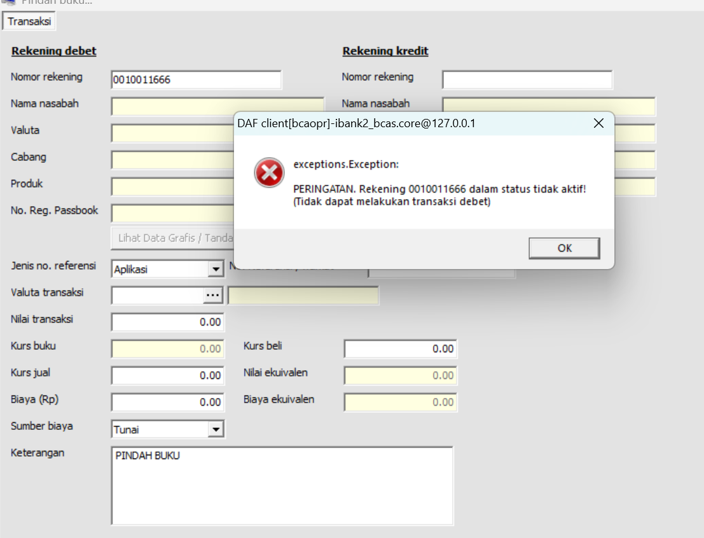
Contoh transaksi pada rekening Tidak Aktif3.2 Transaksi pada Rekening Dormant
- Transaksi diblokir — pesan penolakan bahwa rekening berstatus Dormant
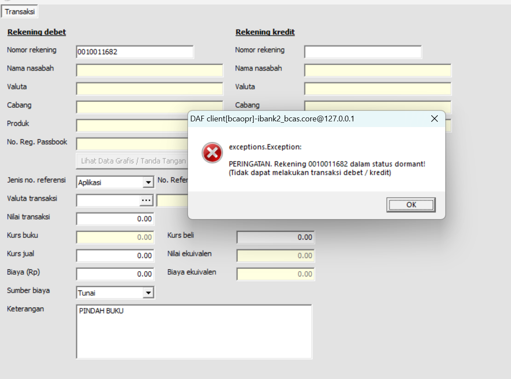
Pesan penolakan transaksi pada rekening DormantCatatan: Matriks lengkap transaksi yang diperbolehkan per status rekening:
Jenis Transaksi Aktif Tidak Aktif Dormant Setor Tunai (Teller) ✅ ✅ ❌ Tarik Tunai (Teller) ✅ ❌ ❌ Transfer Masuk ✅ ✅ ❌ Transfer Keluar ✅ ❌ ❌ Cek Saldo / Inquiry ✅ ✅ ❌ Tarik Tunai ATM ✅ ❌ ❌
4. Reaktivasi Rekening (UC-05)
-
Menu: Rekening → Ubah Rekening Tidak Aktif / Dormant
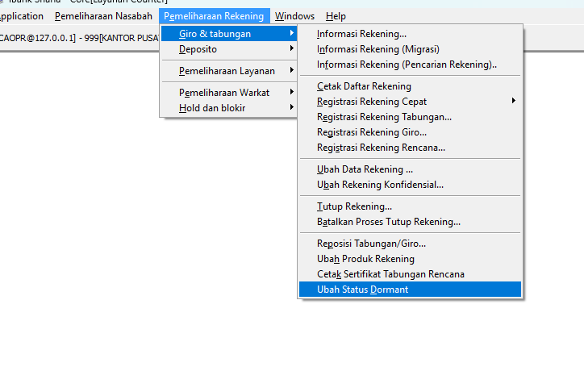
-
Form : Form Ubah Rekening Tidak Aktif / Dormant
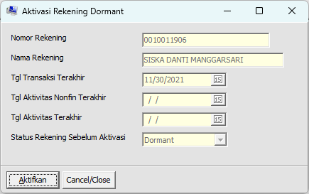
5. Laporan
5.1 Laporan Rekening Tidak Aktif (R041)
-
Menu: Laporan → Rekening Aktif jadi Tidak Aktif
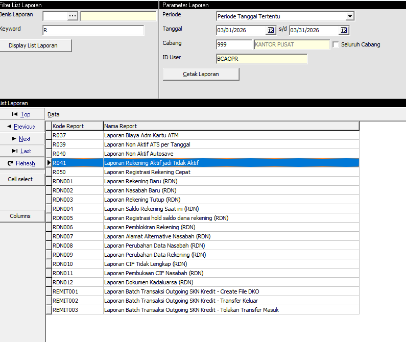
-
Result : Laporan Rekening Aktif jadi Tidak Aktif
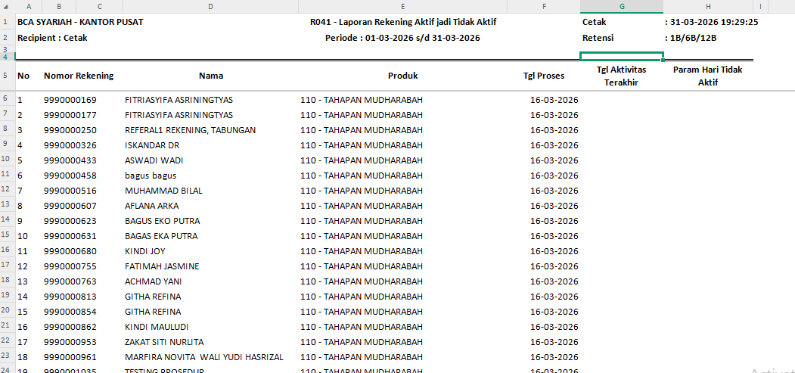
5.2 Laporan Rekening Dormant (R029)
-
Menu: Laporan → Rekening Dormant
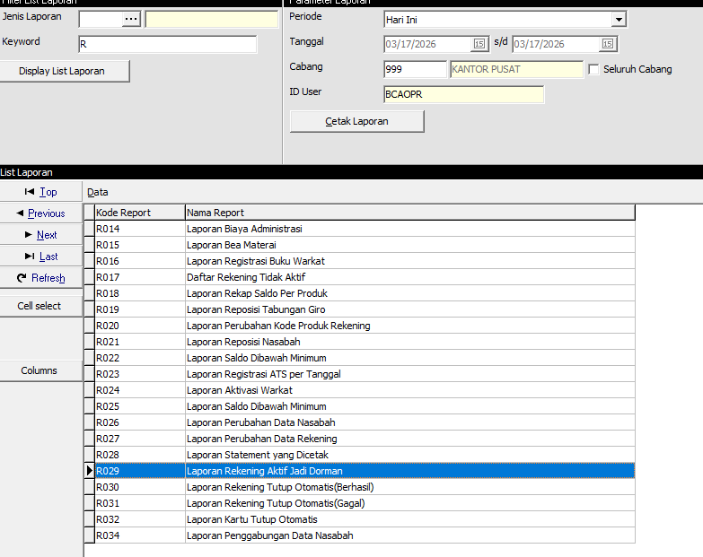
-
Result: Laporan Rekening Dormant
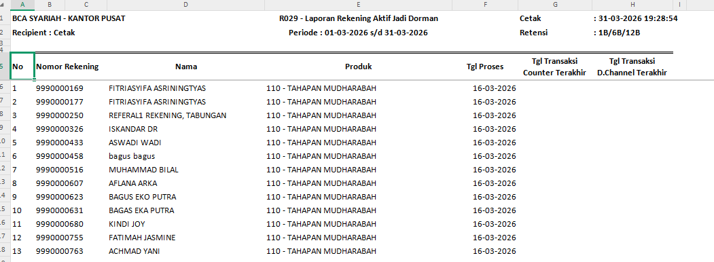
5.3 Laporan Tutup Otomatis (R030)
-
Menu: Laporan → Rekening Tutup Otomatis
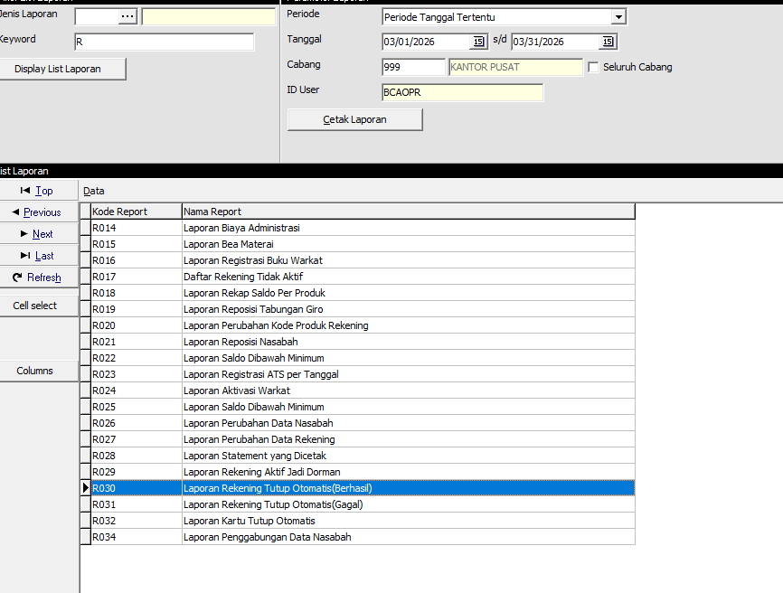
-
Result: Laporan Tutup Otomatis
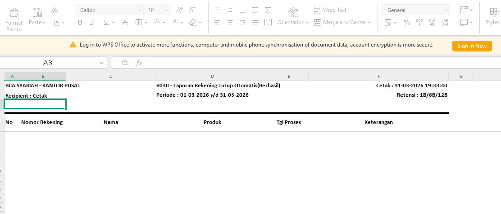
6. Batch EOD
-
EODLIAB01 - UPDATE ACCOUNT LAST TRX DATE (urutan 145)
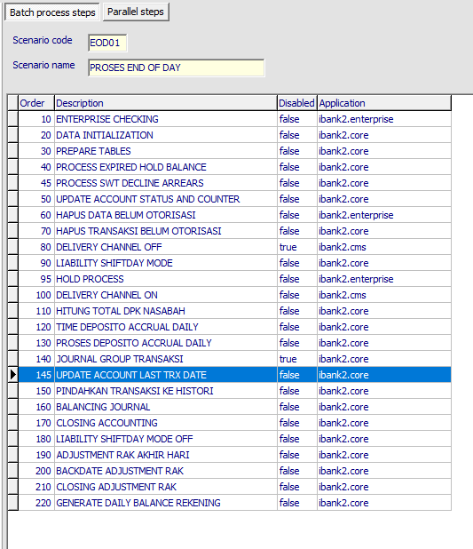
-
EODLIAB02 - Batch Dormant (deteksi tidak aktif → dormant)
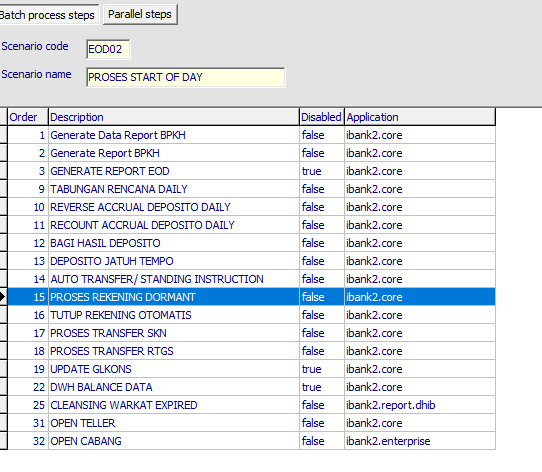
-
EODLIAB02 - Tutup Otomatis
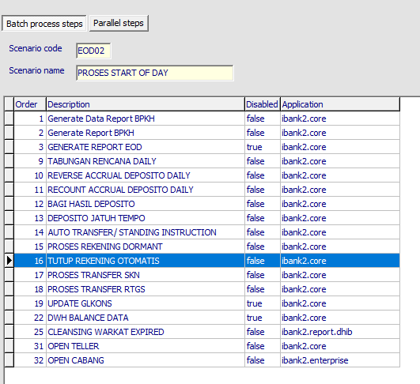